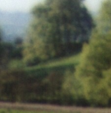
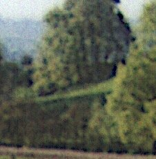
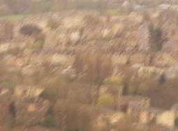
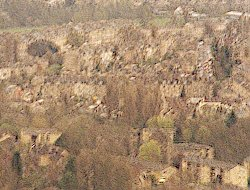

Unshake 1.5 is a Java-2 and C program which improves blurred and shaken photographs by working out the form of the blurring, then deducing what the picture would have looked like if it had not been blurred. Because it is written in Java, once you have installed Sun's Java 2 all you have to do is to unzip one file to install Unshake on your computer. (The Java Runtime Environment is about 8 MBytes, but growing - if you are prepared to work in the English of the USA and use earlier code, the USA version 1.3 of the JRE is only about 5 MB.) A test version for Macs is available.
Also included in this distribution is a library and command-line filter for Linux, UnshakeC1.5r1.
Unshake is offered free for personal use.
This is an example of what it can do; Below is a small part of a picture I took with a cheap Polaroid camera, blown up to 600 dpi. It was a sunny late afternoon in May, so the contrast between sunlit leaves and shadow was quite dazzling. (Click on the picture to see the full image.)
|  |  |
| This is the original, | and this is what Unshake1.5 does to it... |
|  |  |
| And here is a shaken picture taken from the top of Solsbury Hill. | See the current home or at www.unshake.co.uk for more details. |
Unshake can also remove dithering and rasters, and it can work through the lines found on magazine pictures, though for copyright reasons I can't put examples of Unshaken magazine pictures on the website.
But the real point of Unshake is that it does it automatically. You can be certain that there are filters which produce the same results as I have given here (because Unshake found one such filter), and there are some which will give results which look sharper. But Unshake is designed to seek the lingering real information which has been obscured in the image.
© M.D. Cahill 2000-2006.
{kind=link}
{kind=link}
{kind=link}
{kind=link}